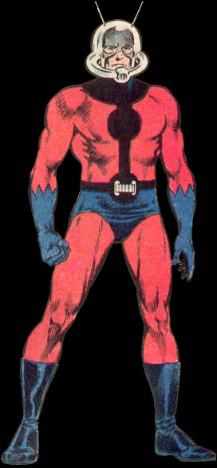

Antman
Name :Scott Edward Lang
First Appearance: (As Lang) Avengers #187, (As Ant-Man) Marvel Premiere #47 (Hired by team) Fantastic Four #389
Group Affiliation:Associate of the Fantastic Four
Source of Powers:Pym Particles
Place of Birth : Coral Gables, Florida
Base of Operations :Currently Mobile
Identity :Secret, known to the Fantastic Four and certain members of the Avengers
Nick Names :None Known
| Height :6'
|
| Weight :190
lbs.
|
| Eyes:Blue
|
| Hair:Blonde
|
|
Occupation :Part Time Adventurer, Electronics
Technician
|
|
Marital Status:Divorced
|
| Strength Level:That of a normal man his age, height,and build who engages in regular moderate exercise. When he shrinks to ant size, he retains his full-size human Strength |
Favorite Story Line:Fantastic Four 389, if there was to be one. It was a nice intro for the character.
|
Least Favorite Story Line:Almost all of them. What can say, I really hated Scott as a character on the team.
|
| Little
Known Fact:After a failed robbery, Scott served a
number of years in jail and tries to make amends for it by
being a part time super hero.
|
| Powers:Scott
uses the harness used by the original Ant Man, Hank Pym, to
shrink down to ant size or to sub-atomic size by exposing
himself to Pym Particles. He maintains his normal strength at
his shrunken size. He can communicate to insects by use of his
helmet.
|
| History: Scott Lang was an electronics expert who could not support his family while doing repair work so he turned his talents to burglary. Apprehended, he served his prison sentence and was paroled in three years for good behavior. Lang had furthered his studies of electronics while in prison and soon was hired by Stark International to work in the design department. While employed, he installed the Avengers' defense system where he first met the team. When his daughter was diagnosed as having a serious congenial heart condition, Lang sought the aid of surgeon Dr. Erica Sondhelm, whom he believed to have held prisoner at Cross Technological Enterprises. Desperate to help his daughter, Lang decided to resort to burglary. Breaking into the New Jersey home of Dr. Henry Pym, Lang stole his Ant-Man uniform and shrinking gas canisters. Unknown to him, Pym observed the theft and in his then current guise as Yellowjacket, followed Lang, curious to see what he would do with the paraphernalia. Garbed as Ant-Man, Lang broke into Cross and discovered Dr. Sondheim wan indeed being held prisoner by Darren Cross, president of Cross Technological Enterprises, who need her expertise to correct his heart condition. Rescuing her and defeating Cross, Lang was relieved when Sondhelm was able to save the life of his daughter. Lang intended on returning the Ant-Man costume to its owner and turn himself in, but Henry Pym, aware of the use to which Lang put the stolen goods, offered to let him keep them, providing that he put them to lawful use. Since that time, Lang has taken the role of a part time hero. He has fought besides the Avengers, the Wasp, Hawkeye, Iron-Man, Spider-Man, the Fantastic Four. and more. With the vicious take over of Stark International, Lang resigned from the company out of respect for Tony Stark. He has since started his own Electronics service. With the disappearance and believed death of their leader Reed Richards, Susan, his wife, sought Lang to fix and activate the team's Time Machine. Lang stayed on for many months as a regular replacement member. With the help of Kristoff, a young boy brainwashed into believing that he was the true Dr. Doom, Lang obtained a new Ant-Man costume which enabled him to fly as well as granted him with a number of offensive capabilities. With the return of Reed, Ant-Man latter quit the team to spend more time with his daughter. He still runs his Electronics Service freelancing from contractor to contractor.
|
|
Personal Note: Maybe being a classic Avengers fan, but Scott Lang never sat right with me. The original Ant-Man was a biochemist, hence how he discovered the Pym Particles. Lang had no way to produce the gas to make more. As a member of the team, he lacked the cosmic grandeur that the rest of the team possessed. While it was a nice change to see someone fiddle around in Reed's lab, Scott was not Reed. If you want to see some of the best years of Scott Lang, check out the Iron Man series during the Iron Wars, Iron Man issue 225, as well as some of his Avengers appearances, Avengers 278 where he and the Wasp fought Titana and the Absorbing Man. |